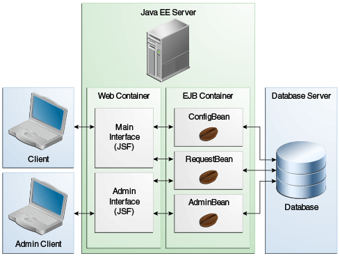

|
Plataforma Java, Edición Empresarial (Java EE) 8 El Tutorial de Java EE |
| Anterior | Siguiente | Contenidos |
La tutoría de Duke es una aplicación web que incorpora varias tecnologías Java EE. Expone una interfaz principal (para estudiantes, tutores y personal del centro de tutoría) y una interfaz de administración (para que el personal mantenga el sistema). Los Enterprise Beans proporciona la lógica de negocio para ambas interfaces. Los enterprise beans utilizan la IPA de Persistencia de Java para crear y almacenar los datos de la aplicación en la base de datos. La Figura 61-1 ilustra la arquitectura de la aplicación.

La aplicación Tutoría de Duke se organiza en dos proyectos principales: la biblioteca
dukes-tutoring-common y la aplicación web dukes-tutoring-war. El
proyecto de biblioteca dukes-tutoring-common contiene las clases de entidad y las
clases auxiliares utilizadas por la aplicación web dukes-tutoring-war y
dukes-tutoring-common se empaqueta y se implementa con
dukes-tutoring-war. El archivo JAR de la biblioteca es útil para permitir que otras
aplicaciones, como una aplicación de cliente JavaFX, reutilicen las clases de entidad y las clases
auxiliares.
Tutoría de Duke utiliza las siguientes características de la plataforma Java EE:
Entidades de persistencia IPA de Java
Una anotación personalizada de Validación de Beans, @Email, para validar
direcciones de correo electrónico
Una definición estándar de jta-data-source que creará el recurso JDBC en la
implementación
Una propiedad estándar en el descriptor de implementación persistence.xml
para crear y eliminar de forma automática y portable las tablas en
jta-data-source
Enterprise beans
Beans singleton y sesión de vista local sin interfaz
Recursos JAX-RS en un bean de sesión
Restricciones de seguridad de Java EE en los métodos de negocio de la interfaz administrativa
Todos los enterprise beans empaquetados dentro del WAR
WebSocket
Un punto de conexión del servidor WebSocket que publica automáticamente el estado de los estudiantes en los puntos de conexión del cliente
Contextos e Inyección de Dependencia
Un evento CDI que se activa cuando cambia el estado de un estudiante
Métodos de controlador para actualizar la aplicación una vez que se activa el evento de estado
Beans gestionados por CDI para páginas Facelets
Anotaciones de Validación de Beans en los beans gestionados por CDI
Tecnología JavaServer Faces, usando Facelets para el front-end web
Plantillas
Componentes compuestos
Un formateador personalizado, PhoneNumberFormatter
Restricciones de seguridad en la interfaz administrativa
Componentes Facelets habilitados para Ajax
La aplicación Tutoría de Duke tiene dos interfaces de usuario principales, ambas empaquetadas en un solo archivo WAR:
La interfaz principal, para estudiantes, tutores y personal.
La interfaz administrativa utilizada por el personal para administrar a los estudiantes y tutores, y para generar informes de asistencia.
| Anterior | Siguiente | Contenidos |